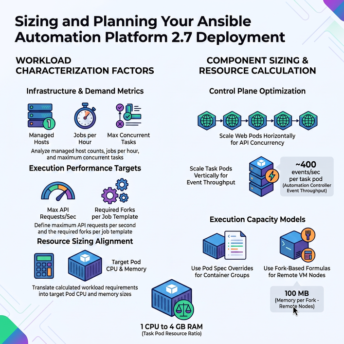

Calculate Sizing Requirements for an OpenShift Deployment
Having the right amount of resources for Ansible Automation Platform helps make the platform reliable and reduces cost. In an operator-based deployment on OpenShift, sizing is expressed as Pod resource requests and limits rather than VM specifications. The high-level points that should be considered during capacity planning are:
-
Characterizing the workloads.
-
Reviewing the capabilities of different component pods.
-
Planning the deployment based on the requirements of the workload.

The same isolated factors apply as in a VM-based deployment:
-
Number of managed hosts controlled by AAP.
-
Jobs or tasks running per hour per host.
-
Maximum number of concurrent jobs to support.
-
Maximum number of forks set on jobs.
-
Maximum API requests per second.
-
Target Pod CPU and memory sizes.
Automation Controller Pods
The AAP Operator deploys automation controller as multiple pods. The two primary workload pods are:
-
web: Handles the UI and REST API. Scales horizontally — add more web pod replicas to handle more concurrent API requests.
-
task: Dispatches jobs, processes job events, and updates the database. CPU and memory on this pod determine control capacity (events per second).
Scale the task pod vertically (increase CPU and memory) to increase event processing throughput. Scale web pods horizontally to increase API concurrency.
Recommended ratio for the task pod: 1 CPU to 4 GB RAM. Add CPU together with memory even if CPU is not a bottleneck — during high memory utilization the queue fills with unprocessed events, and higher CPU helps drain the queue faster.
Container Groups (Execution Capacity on OCP)
Container Groups run jobs as ephemeral pods. Execution capacity is determined by the resource limits set on each pod in the Pod spec override, not by a node’s total memory. Key points:
-
Forks are set at the job template level and passed directly to the container.
-
Container groups do not use the fork capacity algorithm (memory / 100 MB) used by execution nodes.
-
Use
LimitRangeobjects in your namespace to set namespace-wide pod resource limits. -
Set
resources.requestsandresources.limitsin the pod spec override for fine-grained control.
resources:
requests:
cpu: 250m
memory: 100Mi
limits:
cpu: "2"
memory: 2GiRemote Execution Nodes (RHEL VMs peered to OCP)
Remote execution nodes are RHEL VMs that extend the mesh beyond the OCP cluster. Their capacity is calculated the same way as in a VM-based deployment:
Memory Relative Capacity
mem_capacity is the maximum memory needed by one fork. The default value is 100 MB. 2 GB of memory is reserved for AAP services.
Example: 16 GB of available node memory → (16384 - 2048) / 100 ≈ 140 forksCPU Relative Capacity
The baseline value is 1 CPU = 4 forks.
4 CPUs × 4 forks per CPU = 16 forksThe capacity_adjustment value (0 to 1) determines whether fork count is closer to the CPU-bound or memory-bound limit. At 0.5:
Capacity = [140 forks memory × 0.50] + [16 forks CPU × 0.50]
= 70 + 8 = 78 forksAutomation Hub (Private Automation Hub)
Private Automation Hub provides Execution Environments and collections, so it has modest CPU and memory needs. Storage sizing dominates:
-
Number of Execution Environments stored.
-
Size of each Execution Environment.
-
Number of versions of each Execution Environment.
In an OCP deployment, storage is provided by Persistent Volume Claims (PVCs). Ensure the selected StorageClass supports ReadWriteMany if multiple hub pods are needed, or ReadWriteOnce for single-pod deployments.
Event-Driven Ansible Controller (AutomationEDA)
Event-Driven Ansible workloads are sized based on:
-
Number of simultaneous rulebook activations.
-
Number of events received per minute.
In an OCP deployment, rulebook activation limits are configured via the AutomationEDA custom resource spec rather than a file-based settings file. The default is 12 rulebook activations per node and 24 activations total. Memory per activation container is set as a Pod resource limit in the CR — the equivalent of the PODMAN_MEM_LIMIT setting in non-OCP deployments.
Database (PostgreSQL)
The AAP Operator integrates with managed PostgreSQL (via Crunchy Data operator or an external database). Database Pod sizing should match or exceed the higher of the Control Plane or Execution Plane resource requirements:
-
Database storage: see sizing example for formulas.
-
Database RAM and CPU: align with the
taskpod sizing.